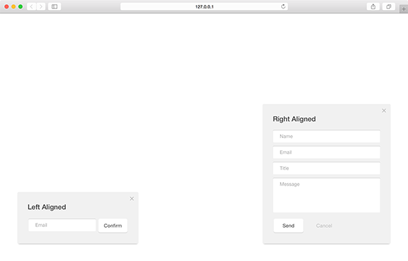
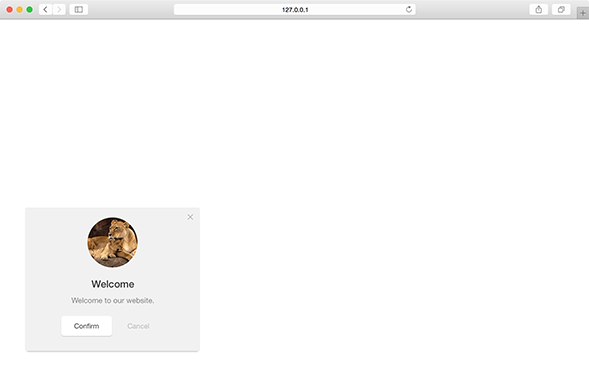

A medium module which slides from either side into the window. This module provides a good amount of space for text and content without taking the full attention of the user.
position
Positition of the slideout module relative to the browser window.
| Value | Type | Behavior |
|---|---|---|
| bottom-left | string | default display the module in the bottom-left corner |
| bottom-right | string | display the module in the bottom-right corner |
Positions - Live Preview

variant
Variants determines any extra content that may be used by the module.
| Value | Type | Behavior |
|---|---|---|
| 1 | int | default text-only module |
| 2 | int | module includes an image |
| 3 | int | module includes a content recommendation |
Image - Live Preview

origin
Direction from which the slideout module should slide from.
| Value | Type | Behavior |
|---|---|---|
| left | string | default for bottom-left positioned modules |
| right | string | default for bottom-right positioned modules |
| bottom | string | module slides up from the bottom of the window |